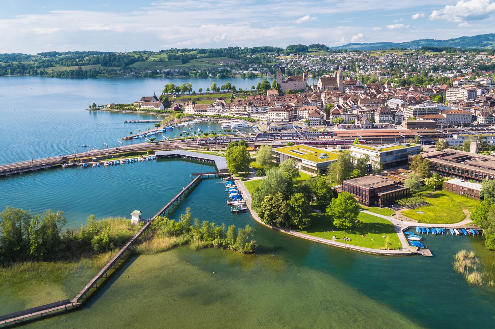
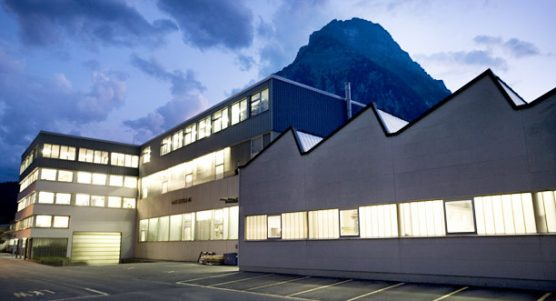
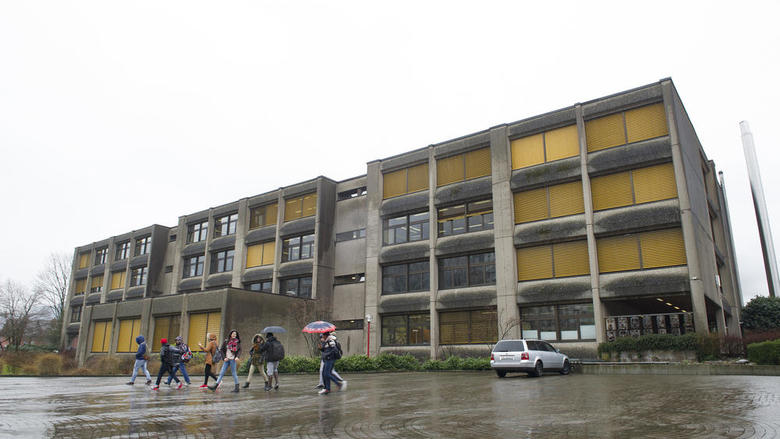

Willkommen auf meinem Profil!

Über mich
Mein Name ist Arian Gagica und ich komme aus Netstal. Zurzeit studiere ich Wirtschaftsinformatik mit Vertiefung Business Software Development. Auf dieser Seite sind jegliche Informationen über mich zu finden.
Mein Lebenslauf und meine Erfahrungen.
- 2017-2020 Wirtschaftsinformatik-Studium FHSG
- 2014-2016 Informatik-Studium HSR 
- 2013-2014 Berufsmatura für Erwachsene
- 2010-2013 Lehre als Kaufmann bei Hans Eberle AG 
- 2007-2010 Sekundarschule in Glarus 
- 2001-2007 Primarschule in Netstal
- 1995 Geboren in Gjilan, Kosovo
In meiner Freizeit bin ich oft am Computer, wo ich programmiere, neue Skills erlerne, Youtube schaue oder mich auf dem laufenden halte. Sonst verbringe ich auch Zeit meinen Körper fit zu halten, mit Fitness und Joggen.